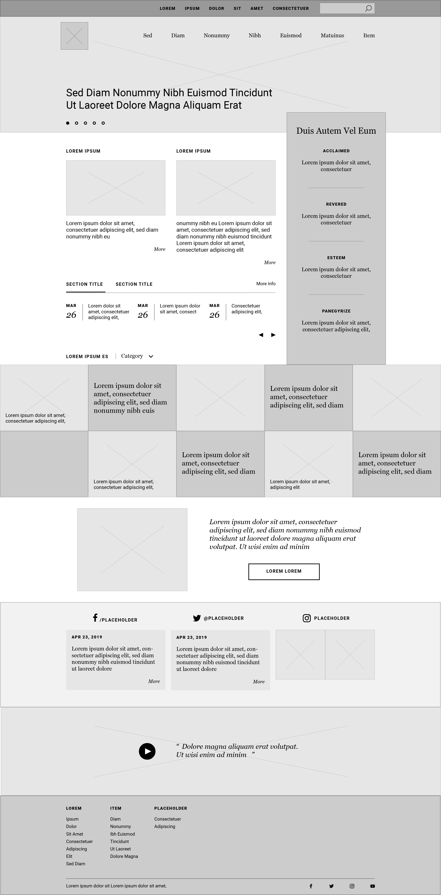

-
Web product wireframes
-
Description
Some wireframes I created to demonstrate functionality & layout, and visualize user journeys. Most of them were used to experiment features, verify ideas and outline specs. They were especially helpful fork planning resources, presenting before the audience and documenting the design process.
-
Time period
2019-2021
-
Keywords
UI Wed design Product User journey


